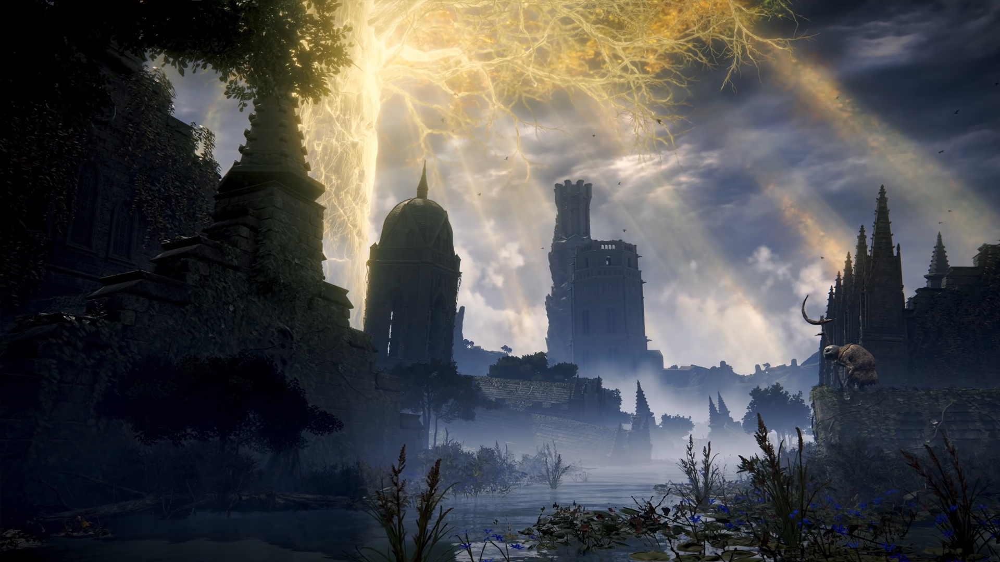
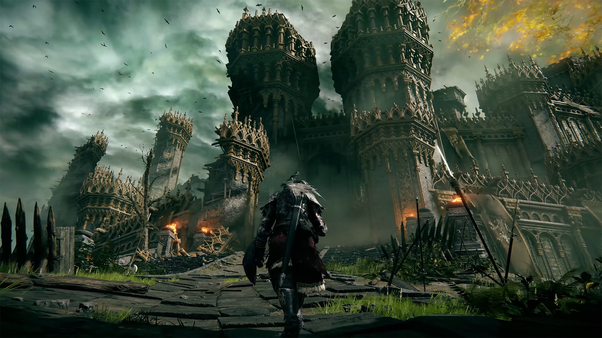

《艾爾登法環》(Elden Ring) 是一款由 FromSoftware 開發、宮崎英高（《黑暗靈魂》系列製作人）與 喬治·R·R·馬丁（《冰與火之歌》作者）共同創作的世界觀動作 RPG。這款遊戲被視為「魂系列」的進化版，結合了高難度挑戰與壯闊的開放世界。
整體來說，雖然這款遊戲的高難度和弱指引可能會讓部分玩家感到挫折， 但我還是誠心建議玩家再給這款遊戲一點耐心，熟悉了操作後並成功擊敗第一個boss後 就會發現這款遊戲的魅力所在，絕對值得一試。